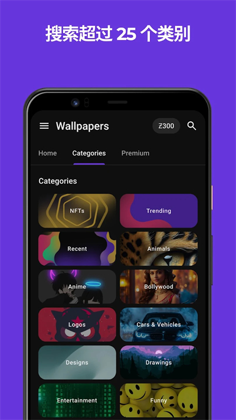
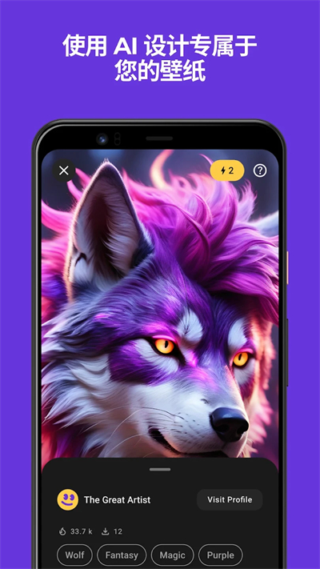

用 Zedge 打通双端铃声壁纸——每周 10 分钟换一套，旧流程踩过的坑都绕开了
每周给 Android 和 iPhone 各换一套铃声+壁纸的固定任务，以前要在五六个 App 之间来回切、手动转格式、找半天素材，现在用 Zedge 做主入口，两条端的流程各自收敛到一步，只在 iOS 那边留一个 GarageBand 转换的必经节点。
我每周有个固定任务：给 Android 主力机和 iPhone 备机各换一套铃声和壁纸。理由不复杂——长期不换，来电铃声像别人的，壁纸看久了视觉疲劳。但以前这事做起来真不顺，两端各有各的麻烦，一条完整的流程要跨五六个工具才能走完。
旧流程有多碎
先不说找素材的痛苦——这是后话。就说素材到手之后的落地环节：
Android 那边还算争气，但旧版 Zedge 偶尔会出现"设完没反应"的情况，得手动进系统设置里找半天；iOS 就是纯粹的噩梦——第三方 App 根本没资格直接设铃声，下载回来的 MP3 必须先转成 M4R，还要走 GarageBand 或者旧版 iTunes 同步，一通操作下来，半小时没了。
更烦的是素材找起来也散。铃声去一个站找，壁纸去另一个站找，iOS 格式转换还要翻教程，每次都要重新回忆"这步怎么弄来着"。最惨的一次找了一个巨喜欢的铃声，iOS 那边卡了二十分钟 GarageBand 才导出成功，最后忘了设通知音，还是默认铃声，白折腾了。
这套流程大概是这样：搜素材（浏览器+收藏夹翻一圈）→ 下载存网盘 → Android 手动导入系统 → iOS 转格式 + GarageBand 导出 → 设通知音和闹钟音 → 换壁纸。六步，每步都要跳工具。少一个都不行。
新流程：Zedge 做主入口，两端各自收敛
现在把 Zedge官网 放进流程的最前端做统一入口，剩下的事分成两条端各自处理——只留一个必走的转换节点在 iOS 侧：
第一步：Zedge 内选好铃声和壁纸。搜索功能够用，分类也清晰，铃声、通知音、动态壁纸、静态壁纸都有分栏。挑的时候注意一下时长，iOS 铃声最长 30 秒，Zedge 本身有筛选，但偶尔还是会碰到超限的，后面 GarageBand 那边会截断。

第二步：Android 侧直接落地。在 Zedge 里点 Set → 选默认铃声、通知音、闹钟音，一键全设。这步现在是最省心的，Android 新版媒体存储 API 把音频注册到系统目录是自动的，设完就是生效。偶发的"设完没声音"重启手机一次就能解决，概率很低。
第三步：iOS 侧走 GarageBand 转换。下载好的铃声存到"文件"App，进 GarageBand 开一个 Audio Recorder 项目，把音频拖进去，分享选"铃声"，导出完成后在设置里选。这步没法绕开，Apple 锁死了第三方 App 写系统音频目录的权限，GarageBand 是唯一可行的免电脑方案。
整个流程现在是 Zedge 选素材 → Android 一键设 / iOS GarageBand 转，三步。少了浏览器搜素材、少了网盘中转、少了手动进系统设置找音频。两个端都只在 Zedge 里完成选素材，剩下的各自在端上闭环。
实操里最容易断的两个环节
iOS GarageBand 找不到文件
这个坑踩过三次。从Zedge下载的铃声后默认存到"文件"App，但有时候路径是 iCloud Drive 而不是本地存储。GarageBand 的文件浏览器默认只扫本地，iCloud Drive 的文件得手动切过去。
解决办法：下载完成后在 Zedge 里确认一下存储位置，或者直接在"文件"App 里把音频从 iCloud Drive 挪到"我的 iPhone"本地目录，再回 GarageBand 导入。文件就在眼前，就怕 GarageBand 没找对地方——后来翻了Zedge文档才确认这是 iCloud Drive 的老问题，不是 GarageBand 本身的 bug。
动态壁纸耗电
Android 上的 Live Wallpaper 和视频壁纸确实好看，但 GPU 持续跑的代价是续航明显掉下去。以前试过几个粒子效果的，中度使用手机从早撑不到晚。现在的做法是：动态壁纸只在周末或者特定场景用一用，工作日换回静态。部分厂商系统设置里有"关闭动态壁纸动画"的节能开关，开了之后视觉效果打折但省电效果明显，看需求选。

效果和边界
现在每周这事儿大概 10 分钟能搞定——Zedge 里挑、Android 那边 3 个 Set 点完、iOS 那边 GarageBand 拖一下导出，完事。对比旧流程至少省了 20 分钟，而且全程不需要离开 Zedge 或者 GarageBand 这两个 App，没了跨工具的切换成本。
这套流程什么时候不划算？两个场景：一是你只在单端用，iOS 或者 Android 只留一个设备，那 iOS 那个 GarageBand 转换环节可以忽略，整个流程基本就是 Zedge 选完直接 Set；二是你追求非常小众的铃声或壁纸，Zedge 库里找不到，还得回到浏览器搜素材那条老路。
至于 Premium 订阅要不要买，我的判断是只在你用 AI 生成铃声或壁纸的情况下才值——去广告和无限 AI 两个核心权益，平时只用现成素材的话免费版完全够，广告虽然烦但不至于挡路。订阅渠道一定要注意，iOS 走 App Store、Android 走 Google Play，Zedge 应用里找不到取消入口，别白花冤枉钱。
另外提一句，这套铃声整理和使用说明的资料，在 GitHub、Gitee、GitCode 三个仓库都同步了一份，国内访问哪个方便就用哪个。